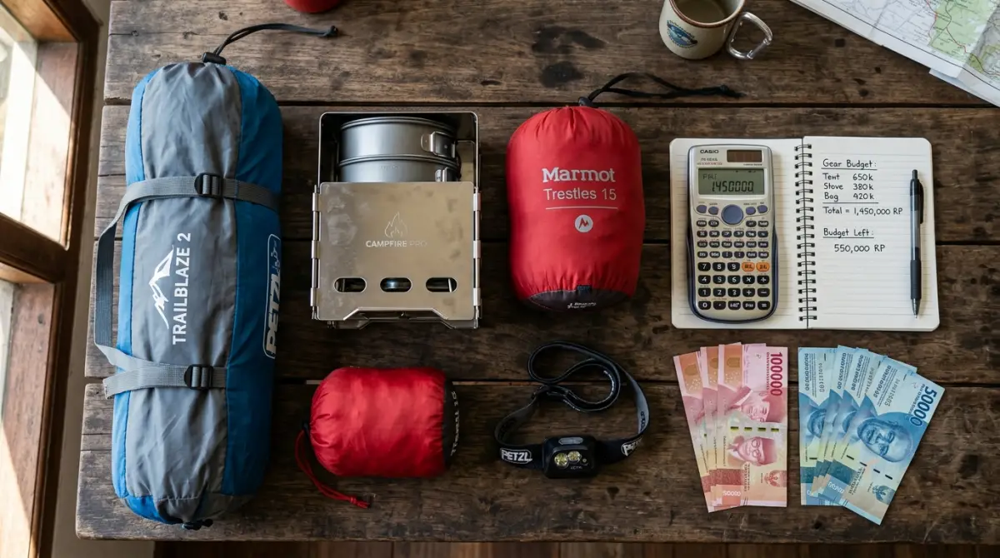

Panduan lengkap harga alat camping dari kelas pemula hingga pro agar budget liburanmu terencana.
Panduan lengkap harga alat camping dari kelas pemula hingga pro agar budget liburanmu terencana.
Bayangkan kamu sudah susah payah mengajukan cuti tahunan ke atasan, menembus kemacetan berjam-jam, dan akhirnya sampai di camping ground impian yang sejuk. Tapi saat malam tiba dan angin mulai menusuk tulang, tenda murah yang kamu beli asal-asalan malah rembes terkena embun, dan sleeping bag-mu ternyata setipis kertas HVS.
Alih-alih healing melepaskan stres tenggat waktu pekerjaan, kamu malah menggigil semalaman dan menyesal setengah mati kenapa tidak riset lebih dulu. Memulai hobi outdoor memang butuh perhitungan, terutama soal harga alat camping lengkap. Jangan sampai niat berhemat di awal justru merusak momen liburan berhargamu, atau lebih parah, membuatmu kapok kembali ke alam.
Lewat panduan ini, aku akan membongkar rincian budget yang realistis, dari kelas pemula yang ramah kantong hingga perlengkapan kelas pro yang mengutamakan kenyamanan absolut. Yuk, susun rencananya sekarang agar liburanmu bebas dari penyesalan!
Menghitung Realistis Budget Hobi Outdoor
Membicarakan harga perlengkapan gunung itu mirip seperti mendiskusikan harga gawai atau laptop untuk kerja; ada harga, ada rupa. Berdasarkan pengalamanku bertahun-tahun keluar masuk kawasan perkemahan—terutama di area yang suhu malamnya bisa sangat merosot seperti di kawasan Batu dan Malang—kualitas barang sangat menentukan peluangmu untuk tidur nyenyak.
Sebagai orang yang pernah melewati fase membeli barang "yang penting murah" hingga akhirnya paham nilai sebuah investasi alat keselamatan, aku membagi budget ini ke dalam tiga kategori utama. Kamu tinggal menyesuaikan dengan isi dompet atau uang bonus tahunanmu.
Kategori Pemula (Budget Pelajar & Karyawan Baru)
Di fase ini, prinsip utamanya adalah kelayakan dasar. Alat-alat di kelas ini umumnya sedikit lebih berat dan memakan tempat (tidak compact), tapi sudah cukup aman untuk kondisi cuaca normal. Kisaran total budget yang dibutuhkan untuk paket lengkap satu orang biasanya berada di angka Rp 500.000 hingga Rp 800.000. Merek-merek lokal yang menyasar kelas menengah ke bawah atau produk-produk no-brand impor sering jadi primadona di sini.
Kategori Menengah (Karyawan Mapan & Penggiat Rutin)
Kalau kamu sudah yakin hobi ini akan bertahan lama dan mulai malas membawa tas ransel yang berat, ini adalah kelasmu. Perlengkapan di kategori menengah sudah memikirkan rasio berat dan kehangatan (warmth-to-weight ratio). Materialnya lebih tahan lama, jahitannya rapi, dan desainnya lebih ergonomis.
Estimasi harga alat camping lengkap di kelas ini berkisar antara Rp 1.500.000 hingga Rp 3.500.000. Merek seperti Eiger, Arei, Consina, atau brand impor seperti Naturehike dan Mobi Garden bermain kuat di segmen ini.
Kategori Pro (Sultan & Hardcore Camper)
Bagi mereka yang menganut aliran ultralight atau yang mencari kenyamanan setara kamar hotel di tengah hutan (biasa disebut glamping mandiri), budget bukan lagi masalah. Material yang digunakan biasanya titanium untuk alat masak, goose down (bulu angsa) untuk sleeping bag, dan silikon nilon ringan untuk tenda. Total budget bisa meroket mulai dari Rp 5.000.000 hingga belasan juta rupiah.
Rincian Estimasi Harga Alat Camping Lengkap
Untuk memudahkanmu membuat checklist dan menghitung pengeluaran, mari kita bedah harga per item berdasarkan sistem kegunaannya di lapangan.
1. Sistem Berlindung: Tenda dan Flysheet
Tenda adalah garis pertahanan pertamamu dari angin, hujan, dan serangga.
- Pemula: Tenda dome kapasitas 2 orang (satu lapis/ single layer) biasanya dibanderol sekitar Rp 150.000 - Rp 250.000. Ingat, tenda ini rawan bocor jika hujan deras. Kamu wajib membeli tambahan flysheet (kain terpal anti air) seharga Rp 70.000 - Rp 100.000.
- Menengah: Tenda double layer dengan rangka fiberglass atau alloy standar. Tahan hujan sedang hingga deras tanpa flysheet tambahan. Harganya berkisar Rp 500.000 - Rp 1.200.000.
- Pro: Tenda ultralight berbahan nilon 20D dengan rangka aluminium aviation-grade. Sangat ringan tapi tangguh menahan badai. Harganya mulai dari Rp 2.000.000 hingga di atas Rp 5.000.000 (untuk merek seperti MSR atau Big Agnes).
2. Sistem Tidur: Sleeping Bag dan Matras
Jangan pernah meremehkan dinginnya tanah. Peralatan tidur yang buruk adalah resep utama masuk angin massal.
- Pemula: Sleeping bag berbahan polar atau dakron tipis bisa didapatkan dengan harga Rp 80.000 - Rp 120.000. Matras spons gulung (hitam) harganya sekitar Rp 35.000 - Rp 50.000.
- Menengah: Sleeping bag tebal dengan comfort limit yang jelas (misalnya 5°C) harganya sekitar Rp 250.000 - Rp 500.000. Di kelas ini, kamu bisa upgrade matras gulung ke matras angin (inflatable pad) yang empuk dengan harga Rp 200.000 - Rp 400.000.
- Pro: Sleeping bag bulu angsa yang bisa dilipat sekepalan tangan namun sangat hangat, harganya mulai dari Rp 1.000.000 - Rp 3.000.000. Matras angin dengan teknologi insulasi thermal (seperti merek Therm-a-Rest) bisa mencapai Rp 2.500.000.

Rincian harga alat camping lengkap dari kelas pemula hingga pro.3. Sistem Dapur: Kompor, Nesting, dan Bahan Bakar
Makan enak di alam adalah sebuah kemewahan yang bisa diusahakan.
- Pemula: Satu set kompor kotak portabel lipat ditambah nesting (panci susun) aluminium biasa harganya sangat miring, sekitar Rp 120.000 - Rp 180.000 untuk satu paket.
- Menengah: Kompor windproof (tahan angin) model bunga atau kompor ultralight lipat ditambah cookset dengan material hard-anodized anti lengket. Siapkan dana Rp 300.000 - Rp 600.000.
- Pro: Set alat masak berbahan titanium (sangat ringan dan aman untuk kesehatan) dipadukan dengan kompor multi-fuel kelas atas (seperti Trangia atau MSR). Harganya mulai dari Rp 1.500.000 hingga Rp 3.000.000+.
4. Sistem Penerangan & Printilan Esensial
Di alam bebas tidak ada saklar lampu. Penerangan sangat krusial.
- Senter/Headlamp: Mulai dari Rp 30.000 (lampu LED biasa) hingga Rp 500.000+ (headlamp tahan air dengan sensor gerak merek Nitecore atau Petzl).
- Lampu Tenda: Sekitar Rp 40.000 - Rp 200.000 tergantung kapasitas baterai dan tingkat lumens.
- Kursi & Meja Lipat (Opsional tapi bikin nyaman): Paket kursi lipat kecil dan meja portabel biasanya memakan budget ekstra sekitar Rp 150.000 - Rp 500.000 untuk kelas entry-level.
Tips Mendapatkan Harga Terbaik Tanpa Mengorbankan Kualitas
Melihat rincian di atas, total harga alat camping lengkap mungkin terasa lumayan berat jika dibeli sekaligus, apalagi kalau gajimu baru saja terpotong cicilan. Tapi tenang, ada beberapa strategi cerdas yang biasa dipakai anak-anak outdoor:
- Cari Paket Bundling: Banyak marketplace menawarkan "Paket Camping Pemula" yang berisi tenda, 2 sleeping bag, kompor, dan matras sekaligus. Membeli paket ini biasanya menghemat 15-20% dibanding membeli secara eceran.
- Beli Bertahap (Mencicil): Jangan paksakan beli semua dalam satu bulan. Bulan ini beli sistem tidur, bulan depan sistem dapur. Untuk barang yang belum punya, kamu selalu bisa menyewanya di tempat rental perlengkapan outdoor yang banyak tersebar di berbagai kota.
- Berburu Saat Tanggal Kembar: Ini rahasia umum. Brand outdoor besar sangat sering memberikan diskon gila-gilaan, cashback, atau gratis ongkir pada event promo tanggal kembar (seperti 10.10 atau 11.11).
Jangan Biarkan Keputusan yang Salah Menghantui Liburanmu
Pada akhirnya, investasi pada perlengkapan outdoor adalah investasi pada keselamatan dan kenyamanan dirimu sendiri. Mengumpulkan budget secara perlahan jauh lebih baik daripada memaksakan diri membeli barang di bawah standar kelayakan hanya demi konten media sosial sesaat.
Tidak ada yang lebih menyedihkan daripada menghabiskan sisa cuti tahunan dengan badan meriang karena kedinginan, melihat teman-teman di tenda sebelah tertawa hangat minum kopi. Jangan sampai kesalahan menghitung harga alat camping lengkap membuatmu menyesali hari libur yang seharusnya indah. Kenali kebutuhanmu, petakan budget-mu sesuai panduan di atas, dan bersiaplah menyambut petualangan tanpa rasa waswas di alam terbuka!
FAQ